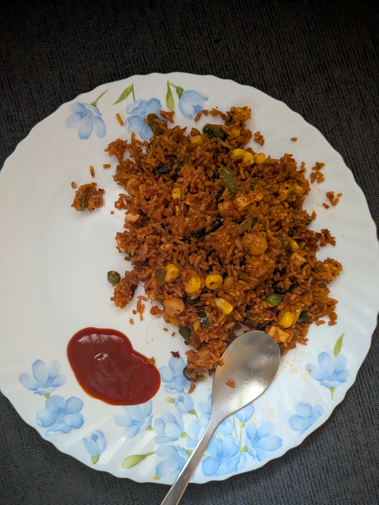

Back to blog
August day notes
yapping everyday in August
Jul 29, 2026
Aug 11
- missed it yesterday so sad
- had an interview and it was really fun. The interviewer was very patient, kind and let me go on tangents and when asked for feedback he said he didn't get to see the messy middle + what constraints I had dev wise, PM wise. Noted, should ask next time before I skip explorations next time
- I am afraid of rambling too much and not sticking to the topoc
- I also noticed I can neverget myself to look at the person when I'm talking, I guess its the autism can't do eye contact thing. I'm not sure if its worth changing but I will rehearse looking at someone more mid sentence, my eyes literally go blind when I start talking anywhere (explains why I'm great at public speaking because according to me, I'm the only person there)
- meditated today. Love sitting in my balcony and meditating, there is a concept in meditation where you are supposed to get rid of the ego and not see attention as this thing that originates from behind your head. I didn't even know people did this. According to me, my attention is where I'm looking, if I'm looking at a tree I zoom in and I'm close to tree and then back down again wherever I'm paying attention to. Regardless interesting observation. I've been so confused everytime a meditating guide was like "imagine that you're a fuzzy ball of sensations" now it all makes sense, it's in pursuit of decentering the attention that you think originates through you. Side note : saw some beautiful birds in my balcony post meditation yesterday, my quietness and lack of movement probably made them feel safe enough to get as close as they did. I hope to befriend them.
- Talking about attention - here's an excellent essay about attention as a force by the excellent Alora Young. A quote from it "By paying attention to a child, you literally are teaching that child what it feels like to have attention paid to them, because a baby doesn’t know the experience of being attended to until someone teaches it what it’s like to be attended to, and that comes to my question of what are we doing to children by putting them in front of devices that cannot pay attention back. What happens to a child when they are raised by a device that cannot respond or interact with them by paying attention back to them?"
- the todo app is coming out so pretty and so nice, I'm excited to release it soon. Need to fix a vulnerability and then its prolly ready to ship
- I've been observing sound design quite a lot and I want to get into it. Please send resources if you see any.
- Sketched out some ideas for a poster i'm working on and suddenly crazy 8 has a newfound love in my life. Will be using more instead of being terrified.
- I enjoyed existing yesterday. It had been a while since I felt that way and I'm glad.
Aug 9
hello
happy sunday
- read but didn't finish Julia Evans' How git works, what a treat
- on the hunt for a perfect sparkles sound
- made chole bhature cuz it rained and gulab jamun because I want to perfect it and perfect the recipe I did


- I laid down to hear the pitter patter of rain, I'm thankful
feeling grateful. Should lay down and be present more often. It makes being alive much more pleasurable
How has your month been so far? Please write to me - santrupti.danagaud at gmail.com
Aug 8
I'm writing today even though this may not go live on the same day. It's because I can ok?!
- I went to YDH finally with bestie and the routine is back on track and my autistic brain is finally so relieved. The lack of routine most Saturdays had made me sad. The dosa was so freaking good, we got an extra and also hit the coffees
- watched supergirl yesterday and heartstopper : forever. So so nice. I will prolly write a supergirl review soon. I watched the drama today and chilled
- made this amazing fried rice that was so fucking good.

Aug 7
- sitting in front of my laptop made me want to vomit today, I just humanly can't be on this anymore. I need a break and will be taking one, most likely no daynotes this weekend
- chilled, slept, watched supergirl and existed
Happy weekend,
Santa
Aug 6
I cannot even exist today
- made a bomb tomato soup and grilled cheese this morning
- had lovely conversations
- I might be doing a very cool dataviz project soon
- Excited for next week because lots coming up, many many conversations I'm looking forward to.
- I will be chilling this weekend, cannot exist. I need to read, touch grass and live and maybe some chaat and gobi in rrnagar
- excited to eat the peanut chutney pudi (shenga hindi) I made today
Aug 5
I am not even alive today
- worked on a video, weirdly I dont hate my own voice. Excited to finish editing and put it out. Pulled out my old mic to do this, what a treat
- A poor man's dessert - hot chapati, ghee and sugar. It's a childhood classic that I'm in love. You wanna pair it with a lil savoury? Have one more chapati, ghee and shenga hindi (peanut chutney pudi)
- Yesterday I tragically realised nobody can use my app unless I pay 99$ for a fucking apple developer license????? I built this whole thing in swift UI and I just.... ping me if you can help me
- I sketched today
- Got ready to go out only to be hit with rain so I skipped I haven't left my house in a while, send help
k bai
Aug 4
I'm writing this with a heavy heart that its getting hard now to be writing everyday, but I do not want to give up.

Made this for lunch using the electric cooker koushik got me for my birthday which he finally sent over lol. I realized how sweet beetroot can be when pressure cooked
- took bucket bath because geyser hasn't been working for a few days and I was getting tired of cold baths
- my to do app is shaping well, I'm excited to release. Probably in a few days hehe
- back and neck pain is back, gotta hit the physio exercises again
- thinking of cutting my own hair soon, kinda excited haha
- pitched myself to someone i've admired if they wanted to work with me for some of his projects, he said bet, lets chat. Excited for what might come.
ok bye
Aug 2 written on Aug 3 morning
Whatever, don't ask me

for breakfast this morning
Here's the thing, I cook well (Ask ankur) but sometimes I go all in on my goals
And this was a "I need fucking protein" morning so thats what I did.
This is a wheat toast + melted cheese slice + peanut butter (yes) + high protein paneer. During my gym days it used to be half a pack paneer, this is more like a third. Thats 26 gms of protein on a toast, fight me. The paneer is fried in chilli oil + honey on top. It is truly such an abomination but it filled me up real good and I'm happy, healthy and ready to tackle my day.
Yesterday
- I went to indiewebclub, thankfully everybody was there
- The conversation was about photos and now I have to work on the tree photos project again because I feel bad for abandoning that project.
- Thought about tax returns, I hope I get it this month
- I hungout with atharva and we battled it out about AI and I just got annoyed at agreeing with him sometimes. We ate pasta and kombucha and talked. Missed it max.
- Then we got pani puri with his flatmate. I had 2 whole plates to myself (the high protein breakfast makes sense now) and a strawberry milk from nandini later
- I came home and immediately realized I had to do damage control so I quickly ate some chocos with milk and hit my stomach with a buttermilk
- I was gonna do some work but post this I was dead, so I played like 6 rounds of skribble with dhruva and won like half of them (we've gotten real good)
Today
- Wordled, stranded and connected on NYT games - my wordle was garbage today, didn't even find the word chee
- sketched
- And goodbye
Aug 1 (published on august 2)
I couldn't write yesterday, so I'm gonna write today.
Welcome back.
Yesterday was another mock whiteboarding and here's the feedback I got. Considering my interviewer was also neurodivergent, we deep dived into some of my behaviors I exhibited and how I could play to my strengths.
- I did't feel comfortable going on tangents like I usually do in a whiteboarding round. And tangents help a lot with creating quantity of ideas. So we spoke at length about how I can go on contained tangents that don't stray away from actual problem solving. One way was to ask as many questions as possible that sets constraints. Another way to do this well to visualise yourself in the users shoes and probing every part of the journey to understand the process of the problem (like where is the person when the problem begins, why does the process follow this path, how does it end and when does it end). Using these as guardrails to help guide your solution was great
- We also discussed many mediums of how I can do this to make myself comfortable. The interviewer told me how he hates writing things on the board because it slows him down. So he asks the interviewers to listen to his voice to help guide the conversation and when summarising he writes things down. I don't think I work like this, I think I like writing things down because it helps ground things for me, voice feels very floating and forgetful and he suggested that I use a piece of paper while using desktop view on my computer. It was a great suggestion. I will definitely consider trying this.
- Another discussion was confidence and how much less confident I sounded whiteboarding vs normally. And on further diagnoses I felt like it was because of constantly not going on tangents even though my brain wants to. And I constantly feel like I float away so much from the design process that I constantly need grounding. And knowing all of this made me even less confident. There is some soul searching needed here but it was a good thing to know. He told me someways he feels confident during interviews which was practicing on random prompts + pretending. Which was also a great suggestion
- I did much better on this than I did in the previous one, we reached a reasonably good solution, there were three drastically different solutions and it was great. I also engaged with my interviewer much more which I loved.
Other things that happened yesterday
- Got mulbagal dose in the morning and got coffee post a lovely walk. There was a random staircase that was very whimsy very nice.
- Finally got dose with atharva after like months and I am extremely pleased to have this routine back in my life
- I ended up going to indieweb, bumped into atharva there but I forgot to check the indieweb was next day
- I cleaned my house after coming back that made me happy.
- I finished some leftovers. I am trying to build the habit of eating leftovers instead of eating new meals all the time and throwing it out later.
- I ended up scrolling until late night because of the D4vd case. It's hard to stomach it but I couldn't get away. True crime truly has a choke hold on me that no amount of therapy will ever undo.
Will probably write soon again in the night.
Toodles
July 31, 26
Another day not in august, welcome back to my channel gays
I didn't do much today other than do a mock whiteboarding session that went so badly. I will put it in the failure hall of fame. I cancelled the second one so I can process this and learn from this experience so the next one is better.
Whiteboarding feedback :
- The most obvious feedback was having the setup pre-done (like for ex : Problem statement, key constraints, impact effort map, information architecture, solutioning, wireframes, coloured blocks). It helps structure your thoughts in everything you need to think about.
- Keeping the interviewer engaged is vital to the success of the whiteboarding. Some ways to do that is by asking questions about the prompt, USPs of the product, user base asking how they want to be engaged with and treating them like a co-creator rather than someone that's judging you.
- One of the bigger mistakes I did was not treating this as a product. I treated the brief like an idea instead. When you treat the problem statement as a product : it helps you think what kind of eco system it sits within, what does the journey look like irl and how does that map to the interactions within the product
- There was no journey mapping at all. I treated the problem statement as straightforward and ended up solving something so obvious that I didn't think of what comes after or before. Definitely a problem that has unanimously turned up in all my whiteboarding sessions
- Some more things I could've included was Jobs to be done & identifying gaps
- Whilst asking questions about product, the journey and thinking about real life scenario in which this exists - all of this shapes the constraints within which a good solution sits and it helps you uncover it
- I also realised the reason that my solutions have been lackluster is because the prompt is still so open ended even after following the design process that it's easy to get really overwhelmed and come up with generic solutions as a result. Defining constraints + having a journey makes your solution exploration stage more robust end to end and room for unique solutions
- There is no point measuring success before coming up with product vision
- End point screens might not be as necessary if the idea communication + product journey map happens more clearly
- Play as much as possible by your strengths, if there is an option, pick the ones you know best rather than what you're interested in solving
- Always always try to use first principles whilst solutioning or asking five why's to get to the root of the problem.
- Keep the whiteboarding engaging with a story but solve problems for the generic person. Whilst also making sure the the solution that works for everybody also works for the story
- At the 4 year experience mark, there is an expectation to use technical terms like CSAT, conversion, acquisition, churn - being technical helps people understand your seniority in the role
- Lookingup common briefs asked at companies is also a great way to practice and feel confident
-
I also showed her an assignment I did in the past and for both the assignment + the whiteboarding she said that I float away quite often and i need guardrails and practice to bring me back to the solution. And the design process will help me do that
This was so detailed and so many critical points of the process were hit that I'm glad it went badly so I could learn all this but I am also heartbroken by how paralyzed and repetitive I got in this whiteboarding. I don't think I've frozen like this before. But practice makes perfect.
Some points for what I'll be doing next
-
I was recommended to read this article and watch this youtube video, which I will do and take pointers
- She also told me that she practices whiteboarding whilst the youtube video runs to see how she does, which I will also be doing
- I will practice many many types of problem statements by myself so that I feel more confident. For all the ones I practice, I will measure the solutions by the guardrails of the design process
- Setup a template of basic blocks for the next whiteboarding exercise
- Relearn JTBDs, user journey mapping and identifying gaps.
Excited to struggle and get better. As much as I was embarrassed I realise, this is the struggle and the kich kich before the growth and I hope I get to see the end of this tunnel. Despite how badly this went, seeing people believe in me (even the person that interviewed me) made me happy. I got this. I'll keep working towards things. And I'm thankful to get people's time.
Some more things I did today :
- ended up cancelling the second whiteboarding so I could process and learn from my mistakes today
- got pappu from nandhana palace, what a treat
- the gulab jamun made yesterday had hardened and was quite tasty with some vanilla ice cream
- tried kurkure again, why doesn't it taste good anymore. How sad, it was an addiction when I was a kid
- Sat in the balcony and enjoyed the sun and wind, I slept a long time in the afternoon and I'm thankful for the relaxation
- Enjoying watching AISA take real good care of all the politicians posting random shit on twitter
- Drinking some ginger ale and enjoying youtube (kennie jd)
- Hoping I get some nice dosa tomorrow, read more and do well in tomorrow's mock whiteboarding
July 30, 26
Another day, another me. Welcome back to my youtube channel.
- Spoke to the guy that rejected me for some feedback, surprisingly heard back and he wanted to speak with me. Got some feedback
- whiteboarding exercise : my solution didn't seem out of the box
- My UI had significantly improved according to him from last year
- They apparently 500 applications for that role so the competition was too tight and there was no room for error
- He liked my website, thought it was cool ; will work on these things next
- Worked on my to do app, very excited - you can import todos from a markdown file, block websites that distract and have the task that you're working on be visible in the top right corner. Very exciting, it looks really pretty too.
- Applied to more jobs
- Sketched today as well and I'm really happy
- I did wordle, strands and connections
- I've started reading Aboutface again, what a dry book jesus christ, but it is technical and rich. And I'm learning slowly but surely.
- 2 more friends are taking my mock whiteboarding exercise tomorrow and I'll report back what kind of feedback I get.
- I made gulab jamun and for some reason they got really huge. It is only my second time making it, I think it happened because I boiled the fried gulab jamun when the syrup was reducing

- Still woke up with a lot of anxiety this morning but it got better as I ate food and worked.
Thank you for coming to my channel.
Toodles
July 29, 26
Yes, theydies and gentlepeople I'm bringing back daynotes because I can write on the web way more easily now and all of you deserve to be subject to me more frequently. August starts in July because I be precrastinating like that.
- Did a mock whiteboarding with my friend that I also voice recorded. it went well and I'm happy. Some "lessons" (looking at you abhinav) were : cover breadth before diving deep ; be faster with solutioning ; ask more questions wrt how things are done right now in a product ; he said it was very engaging and that was great yay
- I was sad today, rejection takes time to feel better and its ok to take time before I jump back into work
- Made a sketch, enjoyed thoroughly, need more visual ideas and I will be seeking
- I made a small change on my site
- Ate palak paneer rice bowl from box8, I like their stuff but this was bland (which was great for my stomach) and got a brownie with egg in it. More eggy cakes in my future. Hopely one day in the future an omelet
- Hearing friends tell me I'm doing ok job hunting was very very reassuring
- Played skribble online with dhruva, I couldn't stop saying "one more game", he won a lot but I won 3 last games back to back. My anxiety and sadness dissipated post this, what a blessing it is to get time with people you love
- Thanks to a signal groupchat I've been playing wordle, strands and connections every single morning instead of scrolling, I'm madly in love. Fully considering getting an NYT subscription so I can play all the archives, especially strands, its too good, it feels really good. I will make my own tiny game one day.
- I miss watching Joana Ceddia, was watching her archived videos again, miss her. But I'm really inspired to make videos again myself. Maybe I should.
- I said something stupid in a groupchat recently and I feel stupid, I want to apologise but I don't know if it was a big deal. I feel icky I ever said it. It's haunting me.
- Bought Fractured Communities by Umar Khalid. Excited to dive in and read a lot.